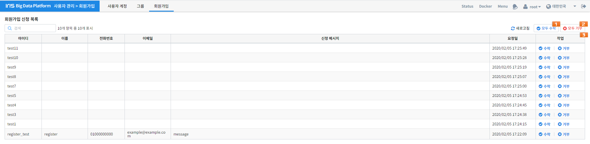

회원가입¶
IRIS에 회원가입을 신청한 사용자를 관리하기 위한 기능입니다. 회원가입 허가는 super user(일반적으로 root 계정)만 가능합니다.
| 번호 | 구분 | 설명 | |
|---|---|---|---|
| 1 | 모두 수락 | 가입을 신청한 사용자들을 모두 수락합니다. | |
| 2 | 모두 거절 | 가입을 신청한 사용자들을 모두 거절합니다. | |
| 3 | 회원가입 목록 | 이름 | 회원가입을 신청한 사용자의 이름 |
| 전화 번호 | 회원가입을 신청한 사용자의 전화번호 | ||
| 이메일 | 회원가입을 신청한 사용자의 이메일 | ||
| 신청 메시지 | 회원가입을 신청한 사용자의 신청 메시지 | ||
| 요청일 | 사용자의 회원가입 요청일 | ||
| 작업 | 회원가입을 신청한 사용자에 대한 수락 / 거절 | ||